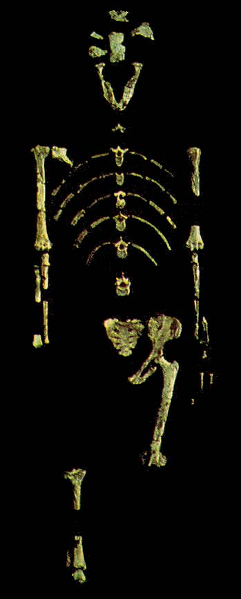

Fossile Hominiden: Lucy (AL 288-1)

Von Donald Johanson und Tom Gray im Jahr 1974 in Hadar, Äthiopien, entdeckt (Johanson und Edey 1981; Johanson und Taieb 1976). Ihr Alter beträgt etwa 3,2 Millionen Jahre. Lucy war ein erwachsenes weibliches Individuum von etwa 25 Jahren und wurde der Spezies Australopithecus afarensis zugeordnet. Etwa 40% ihres Skeletts wurden gefunden, und ihr Becken, Femur (das Oberschenkelknochen) und Tibia zeigen, dass sie zweibeinig war, obwohl es Hinweise darauf gibt, dass afarensis auch teilweise baumbewohnend war. Sie war etwa 107 cm (3'6") groß (klein für ihre Spezies) und wog etwa 28 kg (62 lbs).Das Humerofemoral-Verhältnis, also die Länge des Humerus geteilt durch die Länge des Femurs, beträgt bei Lucy 84,6, im Vergleich zu 71,8 beim Menschen und 97,8 bzw. 101,6 bei den beiden Schimpansenarten (alle diese Werte haben eine Standardabweichung zwischen 2,0 und 3,0). Mit anderen Worten haben Menschen im Vergleich zu ihren Beinen deutlich kürzere Arme als Schimpansen, und Lucy liegt ungefähr in der Mitte. (Korey 1990)
Diese Seite ist Teil der FAQ zu fossilen Hominiden im TalkOrigins-Archiv.
Startseite |
Spezies |
Fossilien |
Kreationismus |
Lektüre |
Referenzen
Illustrationen |
Neuigkeiten |
Feedback |
Suche |
Links |
Fiktion
http://www.talkorigins.org/faqs/homs/lucy.html, 11/30/2002
Copyright © Jim Foley
|| E-Mail an mich